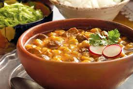

Platillos típicos
Si quieres acercarte más a las tradiciones mexicanas lo mejor es probar su comida, pues así es posible conocer la identidad de un lugar, cada secreto se esconde en los aromas, ingredientes y sabores. Aunque si no consume mucho picante será mejor que te vayas preparando porque este ingrediente casi siempre está presente en sus platillos. Dentro de la gastronomía mexicana podrás encontar platillos exóticos y tradicionales de manera que hemos preparado esta lista con 13, para que los conozcas y no te pierdas de sus sabores e historias.
Patrimonio
El 16 de noviembre de 2010 se reconoció la gastronomía mexicana como Patrimonio Intangible de la Humanidad por la UNESCO, ya que es un conjunto de tradiciones y cultura invaluable para el mundo, llena de sabores y colores.
Tostadas
Es una tortilla de maíz crujiente. Esto se logra secando las tortillas en el comal o al sol, o aunque también se puede lograr al freírlas. Actualmente este platillo en México es considerado como comida rápida debido a su fácil forma de ingerirse.

Pambazo
El pambazo es un emparedado pan tradicional mexicano, que va relleno de papa y chorizo, sumergido en adobo de guajillo y cocinado sobre un comal con un poco de aceite.

Mole
El mole es una salsa que acompaña el pollo o al guajolote. El más popular es el mole poblano, que proviene de Puebla como su nombre lo indica. En cada estado del país este platillo se prepara de distintas formas. Tiene sus orígenes en el mundo prehispánico.

Pozole
El pozole es un caldo con granos de maíz, y dependiendo de la región puede ser blanco, verde o rojo. Sin embargo, al menos existen unas 20 variaciones de pozole.
